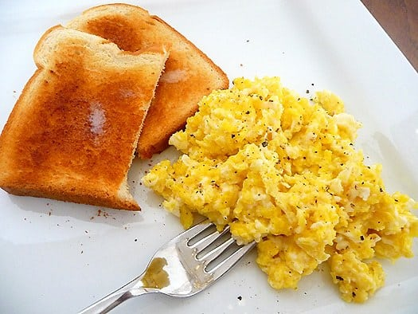

Fluffy and Light
Scrambled Eggs
Ingredients
- 4 eggs
- 1/4 cup milk
- Salt and pepper to taste
- 2 tablespoons butter
Instructions
- In a bowl, whisk together eggs, milk, salt, and pepper until well combined.
- Heat butter in a non-stick skillet over medium heat. Pour in the egg mixture.
- As the eggs begin to set, gently pull the eggs across the pan with a spatula, forming large soft curds.
- Continue cooking – pulling, lifting, and folding eggs – until thickened and no visible liquid egg remains. Do not stir constantly.
- Remove from heat when the eggs are still slightly moist. Serve immediately.